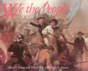

<body bgcolor="#FFFFFF" text="#000000" link="#0000FF" vlink="#CC0000" alink="#CC0000"><center><hr width="350" size="1" align="center" noshade>More than 200 artifacts illuminate the history of the American Revolution<hr width="350" size="1" align="center" noshade><p><a href="https://cdcshoppingcart.uchicago.edu/Cart/ChicagoBook.aspx?ISBN=9780877229377&&PRESS=temple" target="_top">Buy this book!</a> | <a href="https://cdcshoppingcart.uchicago.edu/Cart/Cart.aspx?PRESS=temple" target="_top">View Cart</a> | <a href="https://cdcshoppingcart.uchicago.edu/Cart/Cart.aspx?PRESS=temple" target="_top">Check Out</a></p><p></p></center><!--none//--><h1>We the People</h1>
<h3>Alfred F. Young and Terry J. Fife with Mary E. Janzen </h3>
<P>cloth 0-87722-937-6 $59.95, Mar 93, <FONT COLOR=#990033>Out of Print</FONT>
<br>paper 0-87722-938-4 $24.95, Mar 93, <FONT COLOR=#990033>Out of Stock Unavailable</FONT>
<BR> 265 pp
10x8
280&nbsp;figures
</P><h3 align="center"><P><font color="#996633">Philadelphia Book Clinic Certificate of Award,
1994</font></P>
</H3>
<BLOCKQUOTE><I>"I know of no book on the American Revolution...which accomplishes so much. It is astounding to think that this may be the only accessible illustrated account of the founding generation aimed at a general audience."</I>
<br>&#151<b>Linda K. Kerber</b>, author of <I>Women of the Republic: Intellect and Ideology in Revolutionary America</I><I></I></BLOCKQUOTE>
<p>The history of the American Revolution has been obscured by hero worship and sacred symbols. Using original sources&#151articles of clothing, crafts, artwork, and tools, as well as documents&#151Alfred F. Young and Terry J. Fife attempt to "rescue from oblivion" the ordinary men and women who played so vital a role in shaping the new nation and whose stories have been eclipsed by the extraordinary leaders of that era.
<p>Based on a permanent exhibition at the Chicago Historical Society, <I>We the People</I> offers an unfamiliar approach to familiar material. It addresses two central questions: <I>What roles did ordinary people play in creating the nation?</I> and, <I>To what extent did they achieve the ideals expressed in the Declaration of Independence and the Constitution?</I> More than 200 artifacts are analyzed in their historical context to explore the meaning of the revolutionary era. The authors invite readers to evaluate and interpret visual evidence from the past: revered objects such as the official Declaration of Independence and Paul Revere's engraving of the Boston Massacre are juxtaposed with objects of everyday life&#151a slave's shackles, a soldier's powder horn, a letter from a "minuteman" in the Battle of Lexington.
<p>Blending new social and cultural history with traditional political narrative, Young and Fife redefine and resort the controversies that marked the revolutionary era from the perspective of ordinary people as well as the "founding fathers." George Washington, John Adams, and Tomas Jefferson figure prominently in this history, as do farmers, artisans, women, African Americans, and American Indians. The book is unique in the way it frames the period, expanding the story of the founding of the Republic by extending it to a full generation beyond the Revolution into the early national era and by extending it geographically into the Old Northwest.
<p>With arresting images and authentic voices, <I>We the People</I> captures an American past that will appeal to students, scholars, and general readers who are interested in confronting anew fundamental questions about the founding of America that resonate in our own era.
<BR>&nbsp;<h2>Contents</h2><P>
<p>Color Plates
<br>Introduction: Remembering the American Revolution
<br>Prologue: Defending the Tree of Liberty
<br>1. A Diverse and Aspiring People
<br>2. The Road to Revolution, 1765-75
<br>3. Declaring Independence
<br>4. Winning the War, 1775-83
<br>5. The Constitution and Bill of Rights, 1787-91
<br>6. The Republic in Action
<br>7. The Republic Moves West
<br>8. Creating an American Culture
<br>Epilogue: Nourishing the Tree of Liberty
<br>For Further Reading
<br>Exhibition Checklist
<br>Acknowledgments
<br>Index
</P><BR>&nbsp;<H2>About the Author(s)</H2>
<P><b>Alfred F. Young</b> is Senior Research Fellow at the Newberry Library and Professor Emeritus of History at Northern Illinois University. He is the editor of <I>The America Revolution: Explorations in the History of American Radicalism</I> and co-editor of the 45-volume <I>American Heritage Series</I>.</P>
<P><b>Terry J. Fife</b> is President of History Works, Inc., and was curator at the Chicago Historical Society.</P>
<P><b>Mary E. Janzen</b> is Assistant to the President of the Chicago Historical Society.</P>
<BR><H2>Subject Categories</H2>
<p><A HREF="/tempress/general.html" TARGET="_top">General Interest</a>
<BR><A HREF="/tempress/american.html" TARGET="_top">American Studies</a>
</p>
<BR><h2 class="inpageheading">In the series</H2>
<P><I><a href="http://www.temple.edu/tempress/critical.html" onMouseOver="window.status='Click for other books in this series!'; return true;" onMouseOut="window.status=''; return true;" target="_top">Critical Perspectives on the Past</a></i>, edited by <a href="http://www.temple.edu/tempress/authors/benson_memoriam.html" target="_top">Susan Porter Benson</a>, Stephen Brier, and Roy Rosenzweig.
</p><p><i>Critical Perspectives on the Past</i>, edited by Susan Porter Benson, Stephen Brier, and Roy Rosenzweig, is concerned with the traditional and nontraditional ways in which historical ideas are formed. In its attentiveness to issues of race, class, and gender and to the role of human agency in shaping events, the series is as critical of traditional historical method as content. Emphasizing that history is itself an interpretation of material events, the series demonstrates that the historian's choices of subject, narrative technique, and documentation are politically as well as intellectually constructed.</p>
<p align="center"><a href="https://cdcshoppingcart.uchicago.edu/Cart/ChicagoBook.aspx?ISBN=9780877229377&&PRESS=temple" target="_top">Buy this book!</a> | <a href="https://cdcshoppingcart.uchicago.edu/Cart/Cart.aspx?PRESS=temple" target="_top">View Cart</a> | <a href="https://cdcshoppingcart.uchicago.edu/Cart/Cart.aspx?PRESS=temple" target="_top">Check Out</a></p><p><font face="Arial" size="1"><a href="copyright.html" onMouseOver="window.status='Web Copyright Policy';return true;" onMouseOut="window.status=''" title="Web Copyright Policy">&copy;</a> 2015 <a href="http://www.temple.edu" target="new" onMouseOver="window.status='Link to Temple University home page';return true;" onMouseOut="window.status=''" title="Link to Temple University home page">Temple University</a>. All Rights Reserved. http://www.temple.edu/tempress/titles/836_reg.html</font></p>